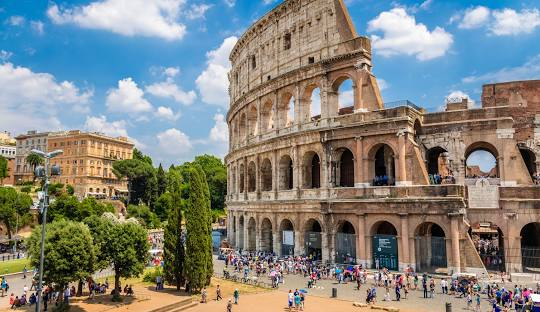

Título

"Roma Antiga foi uma das maiores civilizações da Antiguidade, centralizando-se na cidade de Roma. A fundação de Roma aconteceu em 753 a.C., e, a partir daí, a cidade se expandiu consideravelmente, formando um território de grandes dimensões territoriais. Sua história é dividida em três fases: monarquia, república e império.
A sociedade romana ficou marcada pelos conflitos entre patrícios e plebeus, e, ao longo da república, os plebeus foram conquistando alguns direitos. A crise romana se iniciou no século III, e se deu pela crise política e econômica que afetava o império, além das migrações germânicas. O Império Romano, em sua porção ocidental, deixou de existir em 476.
Leia também: Grécia Antiga — tudo sobre outra grande civilização da Antiguidade
Tópicos deste artigo
1 - Resumo sobre Roma Antiga
2 - Videoaula sobre Roma Antiga
3 - Fundação de Roma
4 - Fases da Roma Antiga
Resumo sobre Roma Antiga
Roma Antiga foi uma civilização que se desenvolveu na Península Itálica, entre 753 a.C. e 476 d.C.
Desenvolveu-se a partir da cidade de Roma, fundada pelos latinos no século VIII a.C.
A história romana é dividida em três fases: monarquia (753-509 a.C.), república (509-27 a.C.) e império (27 a.C.-476 d.C.).
A sociedade romana se dividia em três grupos: patrícios, plebeus, clientes e escravos.
A crise do Império Romano se iniciou no século III, levando a porção ocidental a sua desagregação, no ano de 476.
Videoaula sobre Roma Antiga
Fundação de Roma
A cidade de Roma foi oficialmente fundada em 753 a.C. e diz-se que o seu fundador foi Rômulo. A fundação aconteceu quando uma série de pequenas aldeias latinas decidiram se unir para formar uma nova cidade no Lácio, região central da Península Itálica.
Com o passar do tempo, consolidou-se uma lenda que procurava explicar a origem da cidade de Roma. Essa lenda estabelece que os fundadores de Roma eram descendentes dos sobreviventes da Guerra de Troia que fugiram e se fixaram na Península Itálica. Dois desses sobreviventes eram Rômulo e Remo, netos do rei de Alba Longa, Numitor.
Os irmãos gêmeos foram lançados em um rio para morrerem por ordem de Amúlio, usurpador do trono de Alba Longa. Eles foram resgatados e amamentados por uma loba, cresceram em segurança e, quando adultos, descobriram suas reais origens, vingando-se de Amúlio e devolvendo o trono a Numitor. Depois disso, partiram para fundar uma nova cidade, e daí nasceu Roma, fundada por Rômulo. Pouco depois da fundação, Remo foi assassinado por seu irmão. Para saber mais sobre essa origem mítica de Roma, clique aqui.
Não pare agora... Tem mais depois da publicidade ;)
Fases da Roma Antiga
→ Monarquia Romana (753-509 a.C.)
Com a fundação de Roma, a cidade passou a ser governadas por reis, estabelecendo-se, portanto, como uma monarquia. Nesse período, a cidade foi governada por latinos, sabinos e etruscos, possuindo, ao todo, sete reis. Existe uma série de lacunas acerca desse período histórico, sendo que uma das mais importantes se refere ao domínio etrusco, pois os historiadores não sabem quando e como os etruscos dominaram Roma. O último rei desse período foi Tarquínio, o Soberbo, destituído do trono em 509 a.C. por meio de um golpe.
Foi nesse período que a sociedade romana se estruturou em torno de quatro grandes grupos sociais:
Patrícios: detinham as riquezas, as terras e o poder político.
Clientes: trabalhavam diretamente para os patrícios, conquistando proteção social e certo poderio econômico.
Plebeus: mais numerosos e não possuíam terras, nenhuma riqueza e não tinham poder político, sendo intensamente explorados pelos patrícios. Os conflitos entre patrícios e plebeus eram constantes, uma vez que os últimos sempre estavam exigindo condições de vida mais dignas.
Escravos: em geral, estrangeiros.
Para saber mais sobre esse período, clique aqui.
→ República Romana (509-27 a.C.)
O Senado Romano era a instituição política mais poderosa em Roma durante o período republicano.
A partir da república, Roma passou por transformações em seu sistema político e a ser governada por dois cônsules eleitos anualmente. O Senado, por sua vez, era a instituição política mais poderosa e controlava o sistema político romano. No âmbito social, os embates entre plebeus e patrícios aumentaram, e os plebeus conquistaram muitos direitos importantes.
As revoltas plebeias aconteciam por meio das secessões da plebe principalmente, com os plebeus abandonando Roma voluntariamente. Por meio desses protestos, os plebeus conquistaram melhores condições de vida com base em algumas leis, como as Leis Licínias e a Lei Canuleia. Uma mudança significativa para os plebeus foi a conquista do direito de participarem da política romana.
Expansão territorial: Guerras Púnicas
O período republicano foi de grande expansão territorial romana. A cidade de Roma conquistou toda a Península Itálica, além de ter dado início à expansão para outros locais, como a Europa Ocidental, a Península Balcânica, a Ásia Menor, o norte da África, a Península Ibérica etc.
Uma das grandes conquistas de Roma nesse período se deu com as Guerras Púnicas. Esses conflitos se estenderam de 264 a.C. a 146 a.C., sendo travados entre Roma e Cartago. Ocorreram três guerras, e o que estava em disputa era o controla da Sicília e do comércio marítimo no Mediterrâneo.
Crise da República
A República Romana enfrentou uma grave crise a partir do século II a.C. Essa crise ficou marcada por agitação social, conflitos entre classes, revoltas de escravizados, agitação política, disputa pelo poder, guerras civis, entre outros graves problemas.
No último século da República Romana, foram estabelecidos os triunviratos, governos de três homens, com o objetivo de trazer maior estabilidade à política romana. O Primeiro Triunvirato foi formado por Júlio César, Pompeu e Crasso, e encerrou-se com uma guerra civil.
O Segundo Triunvirato foi formado por Marco Antônio, Otávio e Lépido e também levou Roma a uma nova guerra civil. Ao final desse conflito, Otávio foi nomeado imperador romano em 27 a.C., encerrando a república e dando início à fase imperial.
→ Império Romano (27 a.C.-476 d.C.)
Na fase imperial, o poder era concentrado nas mãos do imperador, e, ao longo desse período, foram formadas quatro dinastias de imperadores:
Júlio-Claudiana (27 a.C.-68 d.C.);
Flaviana (69-96);
Nerva-Antonina (96-192);
Severa (193-235).
São imperadores famosos do período:
Tibério (14-37);
Trajano (98-117);
Marco Aurélio (161-180).
Nesse primeiro momento da fase imperial, destacou-se também a Pax Romana, um período que se estendeu do reinado de Otávio Augusto até o final do reinado de Marco Aurélio, portanto, entre 27 a.C. e 180 d.C. Esse é entendido como um período de relativa paz e prosperidade na história romana, permitindo que Roma ampliasse o seu controle sobre suas províncias. Para saber mais sobre a fase imperial romana, clique aqui.
Crise do Império Romano
A partir do século III, o Império Romano deu início a um período de crise que resultou na sua desagregação. Existem inúmeros fatores que explicam a crise romana, mas entende-se que ela passou pelo colapso do sistema escravista romano. Esse sistema era alimentado pelas guerras de expansão, em declínio desde o século I d.C.
Com um menor número de escravizados, a economia romana passou a produzir menos e o custo de vida disparou rapidamente. Além da crise econômica, houve a crise política, com uma disputa intensa pelo poder que resultou em conspirações e assassinatos de imperadores com grande frequência.
Além disso, houve as invasões germânicas, que se tornaram comuns a partir do século III e que colocaram em xeque a estabilidade do território romano. Os germânicos eram formados por diferentes povos e passaram a invadir as terras romanas por diversos fatores, entre eles, a procura por melhores condições para sobreviver.
Toda essa crise fez o império ser dividido em duas porções: a ocidental e a oriental, sediadas em Roma e Constantinopla respectivamente. A situação não melhorou, e, em 476, Roma foi invadida pelos hérulos e o imperador Rômulo Augusto foi deposto. Isso encerrou a porção ocidental do império, mas a oriental manteve-se até 1453 sob o nome de Império Bizantino.
Fontes
BEARD, Mary. SPQR: uma história da Roma Antiga. São Paulo: Planeta, 2017.
BUSTAMANTE, Regina Maria da Cunha. Rômulo e Remo: escritos e ritos. Disponível em: https://edisciplinas.usp.br/pluginfile.php/4404503/mod_resource/content/1/CORNELL%202_Origens_de_Roma.pdf.
FLEMING, Maria Isabel D’Agostino. Introdução á história e arqueologia de Roma. Disponível em: https://edisciplinas.usp.br/pluginfile.php/4404503/mod_resource/content/1/CORNELL%202_Origens_de_Roma.pdf.
CARTWRIGHT, Mark. Mars. Disponível em: https://www.worldhistory.org/Mars/.
GARCIA, Brittany. Romulus and Remus. Disponível em: https://www.worldhistory.org/Romulus_and_Remus/.
MIATE, Liana. Aeneas. Disponível em: https://www.worldhistory.org/Aeneas/.
HYDEN, Marc. The Legend of Romulus. Disponível em: https://www.worldhistory.org/article/1664/the-legend-of-romulus/.
WASSON, Donald L. Roman Mythology. Disponível em: https://www.worldhistory.org/Roman_Mythology/.
GILL, N. S. Romulus – Roman Mythology about founding and first king of Rome. Disponível em: https://www.thoughtco.com/romulus-roman-mythology-119619.
WASSON, Donald L. Roman Republic. Disponível em: https://www.worldhistory.org/Roman_Republic/.
MARK, Joshua J. Ancient Rome. Disponível em: https://www.worldhistory.org/Rome/.
CARTWRIGHT, Mark. Etruscan Civilization. Disponível em: https://www.worldhistory.org/Etruscan_Civilization/.
Escrito por: Daniel Neves Silva
Formado em História pela Universidade Estadual de Goiás (UEG) e especialista em História e Narrativas Audiovisuais pela Universidade Federal de Goiás (UFG). Atua como professor de História desde 2010.
Gostaria de fazer a referência deste texto em um trabalho escolar ou acadêmico? Veja:
SILVA, Daniel Neves. "Roma Antiga"; Brasil Escola. Disponível em: https://brasilescola.uol.com.br/historiag/roma-antiga.htm. Acesso em 06 de dezembro de 2024.
Videoaulas
Lista de exercícios
Exercício 1
Ver Todos
(FAU) A consolidação do poder romano sobre o mar Mediterrâneo se deu a partir dos conflitos conhecidos como Guerras Púnicas. Qual cidade foi o principal núcleo de rivalidade com a Roma Antiga naquele conflito?
a) Esparta
b) Tiro
c) Babilônia
d) Cartago
e) Nínive
Exercício 2
Ver Todos
(Gualimp – adaptado) Entre os motivos que levaram ao fim do Império Romano, estão as migrações e invasões bárbaras. Atualmente este termo tem diferentes designações, mas no período romano tinha como sentido:
a) Representar o conjunto de povos cujos valores incitavam a violência e a destruição como forma de atuação.
b) Denominar povos que não compartilhavam os valores e o idioma falado pelos romanos.
b) Referir-se aos povos considerados primitivos, ou seja, aqueles que desconhecem a cidade e as regras de convivência comum.
d) Classificar povos considerados inferiores, que viviam de caça e pesca, eram nômades e, para os romanos, incapazes de civilizar-se.
e) Nenhuma das alternativas acima.
Artigos Roma Antiga
A crise do escravismo no Império Romano
Os fatores que contribuíram para a diminuição da oferta de escravos em Roma.
História Geral
A dinastia dos Flávios
As contendas e obras que marcaram a segunda dinastia do Império Romano.
História Geral
A dinastia Júlio-Claudiana
Os fatos que marcam a primeira dinastia do Império Romano.
História Geral
A ditadura de Júlio César
As ações do histórico ditador romano.
História Geral
A organização política da Roma Republicana
Os cargos, assembleias e funções que organizavam Roma no período Republicano.
História Geral
A organização social do Império Romano
As transformações ocorridas em Roma com a ordenação do regime imperial.
História Geral
A origem mítica de Roma
O mito dos irmãos Rômulo e Remo que deu origem à cidade de Roma.
História Geral
Casamento e formação familiar na Roma Antiga
A História e as características do casamento, da formação familiar e da educação dos filhos na Roma Antiga.
História Geral
Crise do Império Romano
A desintegração do poder romano a partir do século III.
História Geral
Império Romano
Acesse e saiba mais sobre o Império Romano, fase que perdurou de 27 a.C. até 476 d.C. Conheça as dinastias desse período, e veja como foi a sua queda.
História Geral
Invasões Bárbaras
O processo de entrada dos povos germânicos nos domínios do Império Romano.
História Geral
Irmãos Graco
Clique aqui e saiba sobre os irmãos Graco, dois tribunos da plebe que tentaram realizar reformas sociais e foram perseguidos pelos senadores.
História Geral
Mário x Sila: a disputa pelo poder em Roma
O conflito entre dois generais que disputaram o controle da Roma Republicana.
História Geral
Pax Romana
Conheça a Pax Romana e a sua importância na manutenção do controle das regiões dominadas por Roma.
História Geral
Pompeia
Conheça a história de Pompeia, cidade romana que foi destruída por uma grande erupção vulcânica no século I d.C.
História Geral
Primeiro Triunvirato
Acesse o site e conheça mais sobre o Primeiro Triunvirato. Veja quais foram os objetivos dessa aliança política e como ela foi formada na Roma Antiga.
História Geral
Queda do Império Romano
Saiba quando e como aconteceu a queda do Império Romano. Conheça os principais motivos que levaram ao fim do Império Romano e suas consequências.
História Geral
Revoltas Plebeias
Os levantes que determinaram a transformação do cenário político romano.
História Geral
Roma - Período Monárquico
As lendas que remontam o período da Monarquia Romana.
História Geral
Roma Antiga e seus problemas urbanos
Veja aqui que os problemas urbanos não são exclusivos da contemporaneidade, uma vez que na cidade de Roma, no século II a.C., eles já faziam parte da rotina da população.
História Geral
Roma – Período Republicano
As transformações políticas e a expansão das fronteiras romanas.
História Geral
Rômulo e Remo
Clique aqui e saiba quem são Rômulo e Remo, dois personagens de uma das lendas mais importantes da mitologia romana, ligada à fundação de Roma.
História Geral
Segundo Triunvirato
Saiba como foi formado o Segundo Triunvirato e a sua importância para final da República Romana e o início do período imperial.
História Geral
Vândalos e a violência contra o Império Romano
Saiba mais sobre os vândalos, povo bárbaro que ficou famoso pelos saques no fim do Império Romano.
História Geral
"
Veja mais sobre "Roma Antiga" em: https://brasilescola.uol.com.br/historiag/roma-antiga.htm